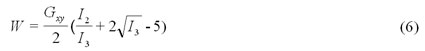
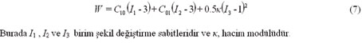
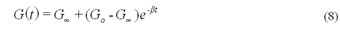
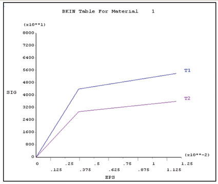

|
5. Malzeme Tanýmlarý ve Çeþitleri
Ekspilisit
analizlerde birçok farklý, çok çeþitli malzeme tipleri mevcuttur.
Nerdeyse doðadaki her dinamik uygulamada yer alabilecek malzemeler
sonlu eleman analizleri için simule edilebilmiþtir. Ekspilisit
yazýlýmlar genelde impilisit yazýlýmlardan daha geniþ bir
malzeme kütüphanesi içerir.
Araþtýrma hazýrlýðý esnasýnda birçok faklý sonlu elemanlar
yazýlýmlarýnýn malzeme tanýmlarý incelenmiþtir. Genelde paket
programlar benzer malzeme kütüphanelerine sahiptirler. Çalýþma
içeriðinde ANSYS/LS-DYNA yazýlýmýnýn içerdiði malzeme modelleri
incelenecektir. Bu yazýlýmýn malzeme tanýmlarý çok deðiþkenlidir.
Doðrudan deney verilerini kullanarak tanýmlamalar yapýlabilmektedir.
Özellikle
ekspilisit yazýlýmlarýn impilisit yazýlýmlardan farklý olarak
içerdiði malzeme modelleri þunlardýr;
· Birim þekil deðiþtirme oranýna baðlý plastisite modelleri.
· Sýcaklýða duyarlý plastisite modeli.
· Gerilme ve birim þekil deðiþtirme baþarýsýzlýk kriterini
(kopma) içeren modeller.
· Boþ malzeme modelleri (hareket baþlangýçlarýný veya uçak
türbinine giren kuþ gibi ani darbeleri simule etmek için)
· Çok deðiþkenli malzeme özellikleri içeren durum denklem
modelleri
Birçok malzeme modeli yoðunluk, elastisite modülü, Poisson
oraný dýþýnda gerilme-birim þekil deðiþtirme tablolarý, yük
eðrileri, akma sýnýrý ve plastik þekil deðiþtirmeyle ilgili
tablolar içermektedir.
Ýstenen bu veriler malzeme tanýmlanmadan önce vektör, matris
yada eðri denklemi olarak yazýlýma tanýtýlýr.
5.1. Lineer Olmayan Elastik Malzemeler
Lineer
olmayan malzeme modellerini temel olarak üç baþlýk altýnda
toplanabilir.
· Blatz-Ko : Sýkýþtýrýlabilir köpük tipi malzemeler için kullanýlýr,
örneðin poliüretan lastikler. Blatz-Ko lastik malzemeleri
sadece sýkýþma altýndaki lastikler içindir. Poisson oraný
(NUXY) otomatik olarak 0.463 alýnmýþtýr. Sadece yoðunluk ve
kayma modülü (GXY) gereklidir. Malzeme tepkisi þekil deðiþtirme
enerjisinin yoðunluðunun fonksiyonu olarak (W) belirlenmiþtir:

Burada I1, I2 ve I3 birim þekil deðiþtirme sabitleridir.
· Mooney Rivlin : Sýkýþtýrýlamaz lastik malzemelerin davranýþlarýný
tanýmlamak için kullanýlýr. Mooney-Rivlin malzeme modeli impilisit
analizlerdeki 2-parametreli malzeme modeli ile nerdeyse aynýdýr.
Yoðunluk, Poisson oraný ve Mooney-Rivlin sabitleri C10 ve
C01 deðerlerinin girilmesi gereklidir. Sýkýþtýrýlamaz davranýþý
ifade edebilmek için Poisson oranýný (NUXY) 0.49 ila 0.5 arasýnda
olmasý gereklidir. Malzeme tepkisi þekil deðiþtirme enerjisinin
yoðunluðunun fonksiyonu olarak (W) belirlenmiþtir :

Burada I1 , I2 ve I3 birim þekil deðiþtirme sabitleridir ve
κ, hacim modülüdür.
· Viskoelastik : Cam ve cam benzeri davranýþ gösteren malzemelerin
tanýmýnda kullanýlýr. Viskoelastik malzemedeki kayma davranýþý
þu þekilde ifade edilebilir:

Burada, Go, kýsa dönem (merkez) elastik kayma modülü, G¥,
uzun dönem (sonsuz) elastik kayma modülü ve 1/β, azalma
sabitidir.
Non-lineer elastik malzemeler büyük ölçüde geri dönülebilir
elastik deformasyonlara maruz kalabilirler.
5.2. Plastisite Malzeme Modelleri
ANSYS/LS-DYNA
programýnda 11 farklý plastisite modeli mevcuttur. Hangi modelin
seçileceði malzemenin tipi ve malzeme sabitlerinin elde edilebilirliði
ile ilgilidir. Non-Lineer sonlu eleman analizlerinin tutarlýlýðý,
girilen malzeme özelliklerinin kalitesine baðlýdýr. En iyi
sonuçlarý elde etmek için malzeme üreticilerinden gerekli
sabitler temin edilmeli veya malzeme deneysel analiz edilmelidir.
Ýzotropik
malzemelerde plastisite modelleri iki farklý kategoriye ayrýlabilir;
5.2.1. Birim þekil deðiþtirme oranýndan baðýmsýz plastisite
Ýzotropik
malzemeler için üç farklý birim þekil deðiþtirme oranýndan
baðýmsýz plastisite modeli mevcuttur: a. Klasik bilineer kinematik
pekleþme, b. Klasik bilineer izotropik pekleþme, c. Elastik
plastik hidrodinamik.
Bu modeller malzemenin gerilme birim þekil deðiþtirme davranýþýný
belirtmek için iki eðim kullanýr; elastik modül (EX) ve tanjant
modülü (ETAN) (Þekil 1).

Þekil 1 - Bilineer kinematik pekleþme
Birim þekil deðiþtirme oranýndan baðýmsýz malzeme modelleri,
(Þekil 1) tipik olarak sac metallerin pres iþlemleri gibi,
þekil verme iþleminin uzun sayýlabileceði durumlarda kullanýlmaktadýr.
Her üç model de mühendislikte en çok kullanýlan metaller;
çelik, alüminyum, dökme demir ve benzeri malzemeler için kullanýlabilir.
Klasik bilineer kinematik pekleþme ve bilineer izotropik pekleþme
arasýndaki farklar; pekleþme kabulünden ileri gelir. Kinematik
pekleþmeye göre ikincil akma 2σy deðerinde oluþurken,
izotropik pekleþme 2σmax 'da gerçekleþir.
|